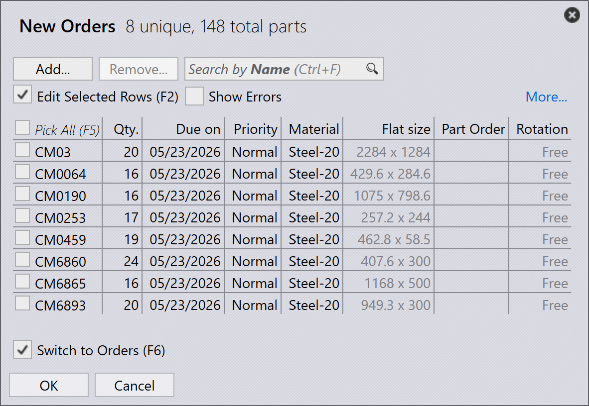
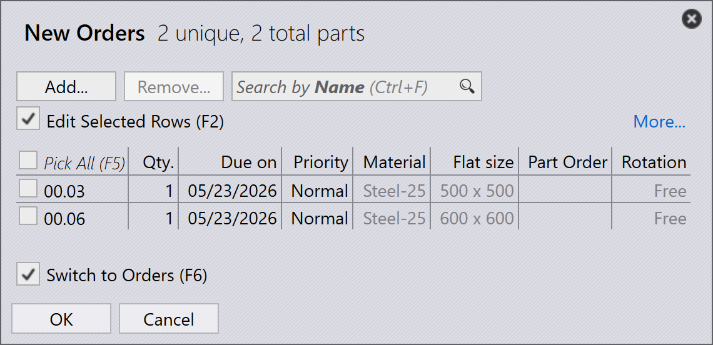

Import objednávek
Objednávky lze vytvořit nebo importovat pomocí následujících metod:
-
Import objednávek ze souborů tabulkového procesoru.
-
Automatický import objednávek pomocí nastavení sledování.
-
Vytváření objednávek z existujících dílů v knihovně dílů.
-
Vytváření objednávek ze statických rozmístění sestav.
Import objednávek z tabulky
-
Přejděte na otevřít → Import _složky….

-
Podporované formáty tabulkových procesorů zahrnují CSV, XLSX a XML.
-
Vyberte požadovaný soubor tabulky a klikněte na otevřít.
-
Proces importu je podobný pracovnímu postupu importu zakázky/sestavy.

| Tabulku můžete také přímo přetáhnout myší na stránku objednávek pro import objednávek. |
Import objednávek pomocí nastavení sledování
-
Povolte možnost Import tabulkového procesoru z 'Live složky' v Sledovat nastavení.
-
Vyberte Import složek v Opce import tabulkového procesoru.
-
Nakonfigurujte umístění složky, ze které mají být objednávky importovány.
-
Systém průběžně monitoruje nakonfigurovanou složku.
-
Nově přidané soubory tabulek jsou automaticky importovány do objednávek.

| Podrobné kroky konfigurace naleznete v dokumentaci nastavení sledování. |
Vytváření objednávek z knihovny dílů
-
Vyberte požadované díly z knihovny dílů.
-
Klikněte pravým tlačítkem a vyberte Nový… → Zakázka pro otevření dialogu Nové zakázky.

-
Zadejte požadované údaje jako množství, termín dodání a prioritu.

-
Klikněte na OK pro vytvoření objednávek.
-
Systém automaticky přepne na stránku objednávek.
-
Vytvořené objednávky se zobrazí na stránce připravených objednávek pro vytvoření zakázky.
Vytváření objednávek ze sestavy
-
Klikněte pravým tlačítkem na požadovanou sestavu.
-
Vyberte Nový… → Zakázka pro otevření dialogu Nové zakázky.

-
Zadejte požadovaný Počet konstrukčních skupin.

-
Klikněte na OK pro vytvoření objednávek.